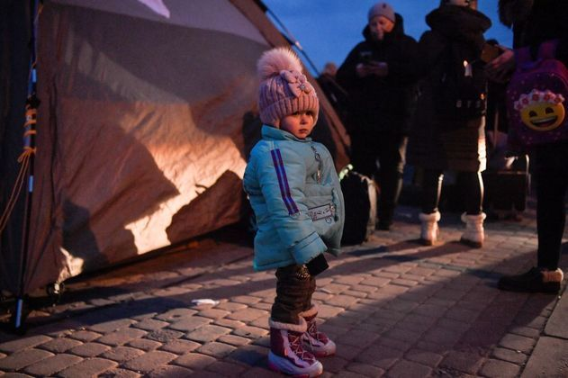

Sobre nós
Após os acontecimentos com a Ucrânia, foi notável que muitas pessoas ficaram desabrigadas por conta das áreas de risco no país. Então tivemos a iniciativa de criar um projeto que ajudará a fornecer abrigo às refugiadas da guerra.

Nossa ONG recebe mulheres, crianças e adolescentes, e tem como principal objetivo fornecer abrigo e apoio para ucranianos neste momento tão difícil, para que possam se sentir acolhidos e seguros.
Contribua com a nossa causa

Estamos arrecadando fundos para comprar roupas e alimentos para as refugiadas ucranianas. Esta causa é muito importante, por conta da enorme quantidade de familias de refugiados chegando ao Brasil.
Estamos Felizes com o valor que ja conseguimos, mas gostariamos de atingir uma nova meta para podermos ajudar ainda mais as familias.
Caso queira contribuir, clique no botão de doação localizado no menu.